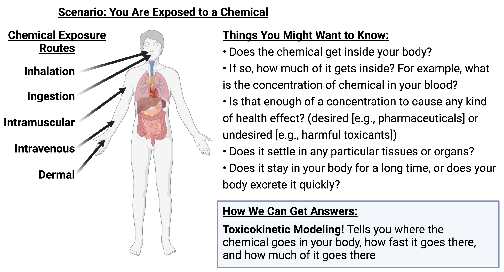

6.6 Toxicokinetic Modeling
This training module was developed by Caroline Ring and Lauren E. Koval.
All input files (script, data, and figures) can be downloaded from the UNC-SRP TAME2 GitHub website.
Disclaimer: The views expressed in this document are those of the author and do not necessarily reflect the views or policies of the U.S. EPA.
Introduction to Training Module
This module serves as an example to guide trainees through the basics of toxicokinetic (TK) modeling and how this type of modeling can be used in the high-throughput setting for environmental health research applications.
In this activity, the capabilities of a high-throughput toxicokinetic modeling package titled ‘httk’ are demonstrated on a suite of environmentally relevant chemicals. The httk R package implements high-throughput toxicokinetic modeling (hence, ‘httk’), including a generic physiologically based toxicokinetic (PBTK) model as well as tables of chemical-specific parameters needed to solve the model for hundreds of chemicals. In this activity, the capabilities of ‘httk’ are demonstrated and explored. Example modeling estimates are produced for the high interest environmental chemical, bisphenol-A. Then, an example script is provided to derive the plasma concentration at steady state for an example environmental chemical, bisphenol-A.
The concept of reverse toxicokinetics is explained and demonstrated, again using bisphenol-A as an example chemical.
This module then demonstrates the derivation of the bioactivity-exposure ratio (BER) across many chemicals leveraging the capabilities of httk, while incorporating exposure measures. BERs are particularly useful in the evaluation of chemical risk, as they take into account both toxicity (i.e., in vitro potency) and exposure rates, the two essential components used in risk calculations for chemical safety and prioritization evaluations. Therefore, the estimates of both potency and exposure and needed to calculate BERs, which are described in this training module.
For potency estimates, the ToxCast high-throughput screening library is introduced as an example high-throughput dataset to carry out in vitro to in vivo extrapolation (IVIVE) modeling through httk. ToxCast activity concentrations that elicit 50% maximal bioactivity (AC50) are uploaded and organized as inputs, and then the tenth percentile ToxCast AC50 is calculated for each chemical (in other words, across all ToxCast screening assays, the tenth percentile of AC50 values were carried forward). These concentration estimates then serve as concentration estimates for potency. For exposure estimates, previously generated exposure estimates that have been inferred from CDC NHANES urinary biomonitoring data are used.
The bioactivity-exposure ratio (BER) is then calculated across chemicals with both potency and exposure estimate information. This ratio is simply calculated as the ratio of the lower-end equivalent dose (for the most-sensitive 5% of the population) divided by the upper-end estimated exposure (here, the upper bound on the inferred population median exposure). Chemicals are then ranked based on resulting BERs and visualized through plots. The importance of these chemical prioritization are then discussed in relation to environmental health research and corresponding regulatory decisions.
Introduction to Toxicokinetic Modeling
To understand what toxicokinetic modeling is, consider the following scenario:

Simply put, toxicokinetics answers these questions by describing “what the body does to the chemical” after an exposure scenario.
More technically, toxicokinetic modeling refers to the evaluation of the uptake and disposition of a chemical in the body.
Notes on terminology
Pharmacokinetics (PK) is a synonym for toxicokinetics (TK). They are often used interchangeably. PK connotes pharmaceuticals; TK connotes environmental chemicals – but those connotations are weak.
A common abbreviation that you will also see in this research field is ADME, which stands for:
Absorption: How does the chemical get absorbed into the body tissues?
Distribution: Where does the chemical go inside the body?
Metabolism: How do enzymes in the body break apart the chemical molecules?
Excretion: How does the chemical leave the body?
To place this term into the context of TK, TK models describe ADME mathematically by representing the body as compartments and flows.
Types of TK models
TK models describe the body mathematically as one or more “compartments” connected by “flows.” The compartments represent organs or tissues. Using mass balance equations, the amount or concentration of chemical in each compartment is described as a function of time.
Types of models discussed throughout this training module are described here.
1 Compartment Model
The simplest TK model is a 1-compartment model, where the body is assumed to be one big well-mixed compartment.
3 Compartment Model
A 3-compartment model mathematically incorporates three distinct body compartments, that can exhibit different parameters contributing to their individual mass balance. Commonly used compartments in 3-compartment modeling can include tissues like blood plasma, liver, gut, kidney, and/or ‘rest of body’ terms; though the specific compartments included depend on the chemical under evaluation, exposure scenario, and modeling assumptions.
PBTK Model
A physiologically-based TK (PBTK) model incorporates compartments and flows that represent real physiological quantities (as opposed to the aforementioned empirical 1- and 3-compartment models). PBTK models have more parameters overall, including parameters representing physiological quantities that are known a priori based on studies of anatomy. The only PBTK model parameters that need to be estimated for each new chemical are parameters representing chemical-body interactions, which can include the following:
- Rate of hepatic metabolism of chemical: How fast does liver break down chemical?
- Plasma protein binding: How tightly does the chemical bind to proteins in blood plasma? Liver may not be able to break down chemical that is bound to plasma protein.
- Blood:tissue partition coefficients: Assuming chemical diffuses between blood and other tissues very fast compared to the rate of blood flow, the ratio of concentration in blood to concentration in each tissue is approximately constant = partition coefficient.
- Rate of active transport into/out of a tissue: If chemical moves between blood and tissues not just by passive diffusion, but by cells actively transporting it in or out of the tissue
- Binding to other tissues: Some chemical may be bound inside a tissue and not available for diffusion or transport in/out
Types of TK modeling can also fall into the following major categories:
1. Forward TK Modeling: Where external exposure doses are converted into internal doses (or concentrations of chemicals/drugs in one or more body tissues of interest)
2. Reverse TK Modeling: The reverse of the above, where internal doses are converted into external exposure doses.
Other TK modeling resources
For further information on TK modeling background, math, and example models, there are additional resources online including a helpful course website on Basic Pharmacokinetics by Dr. Bourne.
Script Preparations
Installing required R packages
If you already have these packages installed, you can skip this step, or you can run the below code which checks installation status for you
if(!nzchar(system.file(package = "ggplot2"))){
install.packages("ggplot2")}
if(!nzchar(system.file(package = "reshape2"))){
install.packages("reshape2")}
if(!nzchar(system.file(package = "stringr"))){
install.packages("stringr")}
if(!nzchar(system.file(package = "httk"))){
install.packages("httk")}
if(!nzchar(system.file(package = "eulerr"))){
install.packages("eulerr")}Loading R packages required for this session
library(ggplot2) # ggplot2 will be used to generate associated graphics
library(reshape2) # reshape2 will be used to organize and transform datasets
library(stringr) # stringr will be used to aid in various data manipulation steps through this module
library(httk) # httk package will be used to carry out all toxicokinetic modeling steps## Warning: package 'httk' was built under R version 4.4.1## Warning: package 'eulerr' was built under R version 4.4.1For more information on the ggplot2 package, see its associated CRAN webpage and RDocumentation webpage.
For more information on the reshape2 package, see its associated CRAN webpage and RDocumentation webpage.
For more information on the stringr package, see its associated CRAN webpage and RDocumentation webpage.
For more information on the httk package, see its associated CRAN webpage and parent publication by Pearce et al. (2017).
More information on the httk package
You can see an overview of the httk package by typing ?httk at the R command line.
You can see a browsable index of all functions in the httk package by typing help(package="httk") at the R command line.
You can see a browsable list of vignettes by typing browseVignettes("httk") at the R command line. (Please note that some of these vignettes were written using older versions of the package and may no longer work as written – specifically the Ring (2017) vignette, which I wrote back in 2016. The httk team is actively working on updating these.)
You can get information about any function in httk, or indeed any function in any R package, by typing help() and placing the function name in quotation marks inside the parentheses. For example, to get information about the httk function solve_model(), type this:
Note that this module was run with httk version 2.4.0.
Training Module’s Environmental Health Questions
This training module was specifically developed to answer the following environmental health questions:
After solving the TK model that evaluates bisphenol-A, what is the maximum concentration of bisphenol-A estimated to occur in human plasma, after 1 exposure dose of 1 mg/kg/day?
After solving the TK model that evaluates bisphenol-A, what is the steady-state concentration of bisphenol-A estimated to occur in human plasma, for a long-term oral infusion dose of 1 mg/kg/day?
What is the predicted range of bisphenol-A concentrations in plasma that can occur in a human population, assuming a long-term exposure rate of 1 mg/kg/day and steady-state conditions? Provide estimates at the 5th, 50th, and 95th percentile?
Considering the chemicals evaluated in the above TK modeling example, do the \(C_{ss}\)-dose slope distributions become wider as the median \(C_{ss}\)-dose slope increases?
How many chemicals have available AC50 values to evaluate in the current ToxCast/Tox21 high-throughput screening database?
What are the chemicals with the three lowest predicted equivalent doses (for tenth-percentile ToxCast AC50s), for the most-sensitive 5% of the population?
Based on httk modeling estimates, are chemicals with higher bioactivity-exposure ratios always less potent than chemicals with lower bioactivity-exposure ratios?
Based on httk modeling estimates, do chemicals with higher bioactivity-exposure ratios always have lower estimated exposures than chemicals with lower bioactivity-exposure ratios?
How are chemical prioritization results different when using only hazard information vs. only exposure information vs. bioactivity-exposure ratios?
Of the three datasets used in this training module – bioactivity from ToxCast, TK data from httk, and exposure inferred from NHANES urinary biomonitoring – which one most limits the number of chemicals that can be prioritized using BERs?
Data and Models used in Toxicokinetic Modeling (TK)
Common Models used in TK Modeling, that are Provided as Built-in Models in httk
There are five TK models currently built into httk. They are:
- pbtk: A physiologically-based TK model with oral absorption. Contains the following compartments: gutlumen, gut, liver, kidneys, veins, arteries, lungs, and the rest of the body. Chemical is metabolized by the liver and excreted by the kidneys via glomerular filtration.
- gas_pbtk: A PBTK model with absorption via inhalation. Contains the same compartments as
pbtk. - 1compartment: A simple one-compartment TK model with oral absorption.
- 3compartment: A three-compartment TK model with oral absorption. Compartments are gut, liver, and rest of body.
- 3compartmentss: The steady-state solution to the 3-compartment model under an assumption of constant infusion dosing, without considering tissue partitioning. This was the first httk model (see Wambaugh et al. 2015, Wetmore et al. 2012, Rotroff et al. 2010).
Chemical-Specific TK Data Built Into ‘httk’
Each of these TK models has chemical-specific parameters. The chemical-specific TK information needed to parameterize these models is built into httk, in the form of a built-in lookup table in a data.frame called chem.physical_and_invitro.data. This lookup table means that in order to run a TK model for a particular chemical, you only need to specify the chemical.
Look at the first few rows of this data.frame to see everything that’s in there (it is a lot of information).
## Compound CAS
## 2971-36-0 2,2-bis(4-hydroxyphenyl)-1,1,1-trichloroethane (hpte) 2971-36-0
## 94-75-7 2,4-d 94-75-7
## 94-82-6 2,4-db 94-82-6
## 90-43-7 2-phenylphenol 90-43-7
## 1007-28-9 6-desisopropylatrazine 1007-28-9
## 71751-41-2 Abamectin 71751-41-2
## CAS.Checksum DTXSID Formula
## 2971-36-0 TRUE DTXSID8022325 C14H11Cl3O2
## 94-75-7 TRUE DTXSID0020442 C8H6Cl2O3
## 94-82-6 TRUE DTXSID7024035 C10H10Cl2O3
## 90-43-7 TRUE DTXSID2021151 C12H10O
## 1007-28-9 TRUE DTXSID0037495 C5H8ClN5
## 71751-41-2 TRUE DTXSID8023892 <NA>
## All.Compound.Names
## 2971-36-0 2,2-bis(4-hydroxyphenyl)-1,1,1-trichloroethane (hpte)|2,2-bis(4-hydroxyphenyl)-1,1,1-trichloroethane|Dtxsid8022325|2971-36-0
## 94-75-7 2,4-d|Dichlorophenoxy|2,4-dichlorophenoxyacetic acid|94-75-7|Dtxsid0020442
## 94-82-6 2,4-db|Dtxsid7024035|2,4-dichlorophenoxybutyric acid|94-82-6
## 90-43-7 2-phenylphenol|Dtxsid2021151|90-43-7
## 1007-28-9 6-desisopropylatrazine|Deisopropylatrazine|Dtxsid0037495|1007-28-9
## 71751-41-2 Abamectin|71751-41-2
## logHenry logHenry.Reference logMA logMA.Reference logP
## 2971-36-0 -7.179 EPA-CCD-OPERA NA <NA> 4.622
## 94-75-7 -8.529 EPA-CCD-OPERA NA <NA> 2.809
## 94-82-6 -8.833 EPA-CCD-OPERA NA <NA> 3.528
## 90-43-7 -7.143 EPA-CCD-OPERA 3.46 Endo 2011 3.091
## 1007-28-9 -8.003 EPA-CCD-OPERA NA <NA> 1.150
## 71751-41-2 NA <NA> NA <NA> 4.480
## logP.Reference logPwa logPwa.Reference logWSol logWSol.Reference
## 2971-36-0 EPA-CCD-OPERA 4.528 EPA-CCD-OPERA -3.707 EPA-CCD-OPERA
## 94-75-7 EPA-CCD-OPERA 5.840 EPA-CCD-OPERA -2.165 EPA-CCD-OPERA
## 94-82-6 EPA-CCD-OPERA 4.998 EPA-CCD-OPERA -3.202 EPA-CCD-OPERA
## 90-43-7 EPA-CCD-OPERA 6.108 EPA-CCD-OPERA -1.812 EPA-CCD-OPERA
## 1007-28-9 EPA-CCD-OPERA 6.989 EPA-CCD-OPERA -2.413 EPA-CCD-OPERA
## 71751-41-2 Tonnelier 2012 NA <NA> NA <NA>
## MP MP.Reference MW MW.Reference pKa_Accept
## 2971-36-0 171.40 EPA-CCD-OPERA 317.6 EPA-CCD-OPERA
## 94-75-7 140.60 EPA-CCD-OPERA 221.0 EPA-CCD-OPERA
## 94-82-6 118.10 EPA-CCD-OPERA 249.1 EPA-CCD-OPERA
## 90-43-7 59.03 EPA-CCD-OPERA 170.2 EPA-CCD-OPERA
## 1007-28-9 155.00 EPA-CCD-OPERA 173.6 EPA-CCD-OPERA 3.41
## 71751-41-2 NA <NA> 819.0 Tonnelier 2012
## pKa_Accept.Reference pKa_Donor pKa_Donor.Reference All.Species
## 2971-36-0 ChemAxon 9.63,10.2 ChemAxon Human
## 94-75-7 ChemAxon 2.81 ChemAxon Human|Rat
## 94-82-6 ChemAxon 3.58 ChemAxon Human
## 90-43-7 ChemAxon 9.69 ChemAxon Human
## 1007-28-9 ChemAxon ChemAxon Human
## 71751-41-2 ChemAxon 12.5,13.2,13.8 ChemAxon Human
## Dog.Foral Dog.Foral.Reference DTXSID.Reference Formula.Reference
## 2971-36-0 NA <NA> EPA-CCD-OPERA EPA-CCD-OPERA
## 94-75-7 NA <NA> EPA-CCD-OPERA EPA-CCD-OPERA
## 94-82-6 NA <NA> EPA-CCD-OPERA EPA-CCD-OPERA
## 90-43-7 NA <NA> EPA-CCD-OPERA EPA-CCD-OPERA
## 1007-28-9 NA <NA> EPA-CCD-OPERA EPA-CCD-OPERA
## 71751-41-2 NA <NA> EPA-CCD-OPERA <NA>
## Human.Caco2.Pab Human.Caco2.Pab.Reference Human.Clint
## 2971-36-0 <NA> <NA> 136.5
## 94-75-7 13.4,7.44,24.1 Honda 2025 0
## 94-82-6 <NA> <NA> 0
## 90-43-7 <NA> <NA> 2.077
## 1007-28-9 52.4,29.2,94.3 Honda 2025 0
## 71751-41-2 <NA> <NA> 5.24
## Human.Clint.pValue Human.Clint.pValue.Reference
## 2971-36-0 0.0000357 Wetmore 2012
## 94-75-7 0.1488000 Wetmore 2012
## 94-82-6 0.1038000 Wetmore 2012
## 90-43-7 0.1635000 Wetmore 2012
## 1007-28-9 0.5387000 Wetmore 2012
## 71751-41-2 0.0009170 Wetmore 2012
## Human.Clint.Reference Human.Fabs Human.Fabs.Reference Human.Fgut
## 2971-36-0 Wetmore 2012 NA <NA> NA
## 94-75-7 Wetmore 2012 NA <NA> NA
## 94-82-6 Wetmore 2012 NA <NA> NA
## 90-43-7 Wetmore 2012 NA <NA> NA
## 1007-28-9 Wetmore 2012 NA <NA> NA
## 71751-41-2 Wetmore 2012 NA <NA> NA
## Human.Fgut.Reference Human.Fhep Human.Fhep.Reference Human.Foral
## 2971-36-0 <NA> NA <NA> NA
## 94-75-7 <NA> NA <NA> NA
## 94-82-6 <NA> NA <NA> NA
## 90-43-7 <NA> NA <NA> NA
## 1007-28-9 <NA> NA <NA> NA
## 71751-41-2 <NA> NA <NA> NA
## Human.Foral.Reference Human.Funbound.plasma
## 2971-36-0 <NA> 0
## 94-75-7 <NA> 0.04001
## 94-82-6 <NA> 0.006623
## 90-43-7 <NA> 0.04105
## 1007-28-9 <NA> 0.4588
## 71751-41-2 <NA> 0.06687
## Human.Funbound.plasma.Reference Human.Rblood2plasma
## 2971-36-0 Wetmore 2012 NA
## 94-75-7 Wetmore 2012 2.11
## 94-82-6 Wetmore 2012 NA
## 90-43-7 Wetmore 2012 NA
## 1007-28-9 Wetmore 2012 NA
## 71751-41-2 Wetmore 2012 NA
## Human.Rblood2plasma.Reference
## 2971-36-0 <NA>
## 94-75-7 Cabral (2003) Chemosphere 51:47–54; Van Ravenzwaay (2003) Xenobiotica 33(8):805–821
## 94-82-6 <NA>
## 90-43-7 <NA>
## 1007-28-9 <NA>
## 71751-41-2 <NA>
## Monkey.Foral Monkey.Foral.Reference Mouse.Foral
## 2971-36-0 NA <NA> NA
## 94-75-7 NA <NA> NA
## 94-82-6 NA <NA> NA
## 90-43-7 NA <NA> NA
## 1007-28-9 NA <NA> NA
## 71751-41-2 NA <NA> NA
## Mouse.Foral.Reference Mouse.Funbound.plasma
## 2971-36-0 <NA> <NA>
## 94-75-7 <NA> <NA>
## 94-82-6 <NA> <NA>
## 90-43-7 <NA> <NA>
## 1007-28-9 <NA> <NA>
## 71751-41-2 <NA> <NA>
## Mouse.Funbound.plasma.Reference Rabbit.Funbound.plasma
## 2971-36-0 <NA> <NA>
## 94-75-7 <NA> <NA>
## 94-82-6 <NA> <NA>
## 90-43-7 <NA> <NA>
## 1007-28-9 <NA> <NA>
## 71751-41-2 <NA> <NA>
## Rabbit.Funbound.plasma.Reference Rat.Clint Rat.Clint.pValue
## 2971-36-0 <NA> <NA> NA
## 94-75-7 <NA> 0 0.1365
## 94-82-6 <NA> <NA> NA
## 90-43-7 <NA> <NA> NA
## 1007-28-9 <NA> <NA> NA
## 71751-41-2 <NA> <NA> NA
## Rat.Clint.pValue.Reference Rat.Clint.Reference Rat.Foral
## 2971-36-0 <NA> <NA> NA
## 94-75-7 Wetmore 2013 Wetmore 2013 1
## 94-82-6 <NA> <NA> NA
## 90-43-7 <NA> <NA> NA
## 1007-28-9 <NA> <NA> NA
## 71751-41-2 <NA> <NA> NA
## Rat.Foral.Reference Rat.Funbound.plasma
## 2971-36-0 <NA> <NA>
## 94-75-7 Wambaugh 2018 0.02976
## 94-82-6 <NA> <NA>
## 90-43-7 <NA> <NA>
## 1007-28-9 <NA> <NA>
## 71751-41-2 <NA> <NA>
## Rat.Funbound.plasma.Reference Rat.Rblood2plasma
## 2971-36-0 <NA> NA
## 94-75-7 Wetmore 2013 NA
## 94-82-6 <NA> NA
## 90-43-7 <NA> NA
## 1007-28-9 <NA> NA
## 71751-41-2 <NA> NA
## Rat.Rblood2plasma.Reference Chemical.Class
## 2971-36-0 <NA>
## 94-75-7 <NA>
## 94-82-6 <NA>
## 90-43-7 <NA>
## 1007-28-9 <NA>
## 71751-41-2 <NA>The table contains chemical identifiers: name, CASRN (Chemical Abstract Service Registry Number), and DTXSID (DSSTox ID, a chemical identifier from the EPA Distributed Structure-Searchable Toxicity Database, DSSTox for short – more information can be found at https://www.epa.gov/chemical-research/distributed-structure-searchable-toxicity-dsstox-database). The table also contains physical-chemical properties for each chemical. These are used in predicting tissue partitioning.
The table contains in vitro measured chemical-specific TK parameters, if available. These chemical-specific parameters include intrinsic hepatic clearance (Clint) and fraction unbound to plasma protein (Funbound.plasma) for each chemical. It also contains measured values for oral absorption fraction Fgutabs, and for the partition coefficient between blood and plasma Rblood2plasma, if these values have been measured for a given chemical. If available, there may be chemical-specific TK values for multiple species.
Listing chemicals for which a TK model can be parameterized
You can easily get a list of all the chemicals for which a specific TK model can be parameterized (for a given species, if needed) using the function get_cheminfo().
For example, here is how you get a list of all the chemicals for which the PBTK model can be parameterized for humans.
chems_pbtk <- get_cheminfo(info = c("Compound", "CAS", "DTXSID"),
model = "pbtk",
species = "Human")
head(chems_pbtk) #first few rows## Compound CAS DTXSID
## 1 2,4-d 94-75-7 DTXSID0020442
## 2 2,4-db 94-82-6 DTXSID7024035
## 3 2-phenylphenol 90-43-7 DTXSID2021151
## 4 6-desisopropylatrazine 1007-28-9 DTXSID0037495
## 5 Abamectin 71751-41-2 DTXSID8023892
## 6 Acephate 30560-19-1 DTXSID8023846